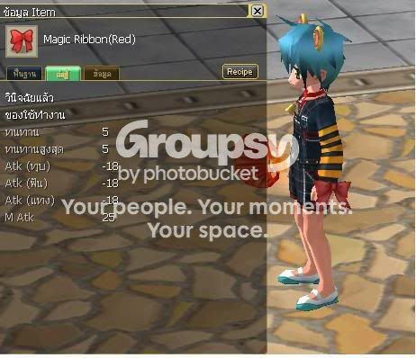

หน้า 102 จากทั้งหมด 136

โพสต์แล้ว:
อังคาร 25 พ.ย. 2008 9:13 amโดย ECO
ถ้าตามยุ่น หางแบบห่วย ตกเป็นตี้เลยแหละ
อยู่ที่จะเอามาหวดติดหรือเปล่ามากกว่า
ค่าหวดของไทยแพงกว่ายุ่นด้วย - -*
โดยรวมผ้าคลุมน่าสนใจดี (ตัวเลข m def บ้างบอก 10 20 30 แล้วแต่ิวิจารณญาณ)
ถ้าอ่านไม่ผิด มีผลกับสกิล heal ด้วย (ares ด้วยมั๊ง)
ปัญหาใหม่คือจะแย่งกับ เจ้าที่ ได้หรือไม่ ฮะฮะ
ดาเมจสายไฟเตอร์ กะ สายเวท คงสมดุลมากขึ้น
แต่อีวา ยังคงเมพเหมือนเดิม
โพสต์แล้ว:
อังคาร 25 พ.ย. 2008 10:15 amโดย ECO
:yoyo100: แม่ค้ายังคงเด่นสินะ
โพสต์แล้ว:
อังคาร 25 พ.ย. 2008 2:04 pmโดย ECO
ชอบสกิลเดธมากมาย ไม่รู้ว่าอัพเดทแล้วจะแรงขึ้นไหม
ถ้าแรงขึ้นก็ดีไป แต่ถ้าไม่ก็ :yoyo106:
ลุ้นดูอัพเดทแล้วจะเป็นยังไง ถ้าแรงขึ้นคงเก็บเวลเองได้แล้วสำหรับสายนี้ :yoyo55:
โพสต์แล้ว:
อังคาร 25 พ.ย. 2008 5:24 pmโดย ECO
ผีเราได้เวลาโหดละพี่น้องคาบา ทำถึกกระทืบเซจคืนได้แล้ววววว
โพสต์แล้ว:
อังคาร 25 พ.ย. 2008 6:19 pmโดย ECO
ยะโฮ สาย god เก็บเวลเองได้แล้ว *-*
ดีใจจริงๆ :yoyo53:
โพสต์แล้ว:
อังคาร 25 พ.ย. 2008 9:23 pmโดย ECO
siephonk เขียน:หมายถึง summon death ที่ job 44 อ่าคับ
หน้าแรกก็มีไม่หัดเปิด
โพสต์แล้ว:
อังคาร 25 พ.ย. 2008 11:11 pmโดย ECO
อืมมมม แรงขึ้นตามสูตรละ
แต่ความเอ๋อยังมีให้เห็นเหมือนเดิม เดินหนีก็หลบได้ละ -.-
โพสต์แล้ว:
อังคาร 25 พ.ย. 2008 11:36 pmโดย ECO
มันทำให้คิดถึงสมัยก่อน ตอนไม่มีเซ็นลากๆแล้วมาลงบอมบ์ในดัน 70
ได้กลับไปเล่นอีกครั้งรู้สึกสนุกดี แต่เปลี่ยนเป็น ซัมมอนยิง
ส่วนตัวชอบซัมม่อนอยู่แล้วอ่ะครับ :yoyo55:
โพสต์แล้ว:
พุธ 26 พ.ย. 2008 1:30 amโดย ECO
เอาเเล้ว Summon Death โหด กลับไปเล่นคาบาหดๆๆ
โพสต์แล้ว:
พุธ 26 พ.ย. 2008 8:05 amโดย ECO
ตัวทดสอบไม่มีเลเวล 5
มีแค่เลเวล 4 ยิงพูรูรูได้ 3000-3500
ซึ่งก็ตรงสูตรดี 500-650 x 600%
โดยรวมเลเวล 5 น่าจะยังเบากว่า mag 103 มี evil soul อยู่ดี
รวมถึงระยะยิง chant time dmg ก็ห่วยกว่ายิงเอง ฯลฯ
แต่เลเวล 2 ใช้งานได้จริงเลยแหละ ฟันซอบางๆหัวหลุด
ของแถมสายเวท ไว้ใช้เก็บเวล ยิงไส้แตก

Great Ribbon + Decieve Thread + Happy Cologne + [sew equipment ร้านอัญมณี]
ปล. ใครใช้สกิล

ไม่ได้ ติดต่อหลังไมค์
โพสต์แล้ว:
พุธ 26 พ.ย. 2008 10:04 amโดย ECO
ขอบคุณสำหรับข้อมูลครับ ของทำนี่หายากจริงๆ :yoyo106:
โพสต์แล้ว:
พุธ 26 พ.ย. 2008 10:21 amโดย ECO
:yoyo110: :yoyo110: :yoyo110:
ขอบคุณ คุณลุก
โพสต์แล้ว:
พุธ 26 พ.ย. 2008 1:43 pmโดย ECO
โอ้....ขอบคุณส่วนผสมเลยครับ พึ่งทราบจริงๆ
แล้วก็ดันสะสมเรดทาลิสเอาไว้....โอ้วววแมะเจ้าT-T
พักวอซักระยะ
ลงแล้วเสียวเจอก็อดฟันหัวหลุด
:yoyo101: :yoyo101:
โพสต์แล้ว:
พฤหัสฯ. 27 พ.ย. 2008 3:58 amโดย ECO
หุหุ
ใครไปทำแจมาแล้วมั่ง
คาบานี่มานเมพดีจิงๆนะ
สาปตายๆ มันมากมาย มีซัก 2 ตัวนี่ทำดันละไม่ถึงครึ่ง ชม.
พอไปถึงบอสก็ช่วยเค้าซัมม่อนมั่ง อู้โล่มืดมั่ง
ทำไป 3 รอบ แจตก 2 ดอก เก็บไม่ทันซักดอก
ปล...ก็อดมันแรงดีจิงๆนะ....ไม่คิด status ด้วย... :yoyo55:
โพสต์แล้ว:
พฤหัสฯ. 27 พ.ย. 2008 2:42 pmโดย ECO
Grim Reaperสำหรับสายบู้หรอ แต่ถ้าสายเวทInt magจะไช้ได้ไหม
ตกลงสกิลนี้ความแรงขื้นอยุ่กับอะไรคับ เพราะมันยังไม่ระเอียดนะ
___________________________________